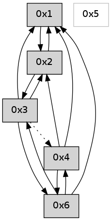

>> << IDX [start] -100 -25 -5 +0 +5 +25 +100 [585.266237974]
 Previous packets
----------------------------------------------------------------------
580.345157 beacon01(adaf) #0 coord=01,02,05,03,04,06 cycle=432.0ms assoc
-- color-indic=0 64 55 63
580.355119 beacon02(adaf) #0 coord=01,02,05,03,04,06 cycle=432.0ms assoc 64 04 9c
580.365119 beacon05(adaf) #0 coord=01,02,05,03,04,06 cycle=432.0ms assoc 64 a2 b6
580.375119 beacon03(adaf) #0 coord=01,02,05,03,04,06 cycle=432.0ms assoc 64 3e 92
580.385120 beacon04(adaf) #0 coord=01,02,05,03,04,06 cycle=432.0ms assoc 64 98 b8
580.395120 beacon06(adaf) #0 coord=01,02,05,03,04,06 cycle=432.0ms assoc 64 ec a4
580.406794 [Hello(2): seq=875 sym=4,1,3 sysInfo= stat=4:1,0,0,0/1:12,0,0,0/3:15,0,0,0]
----------------------------------------------------------------------
580.837266 beacon01(adaf) #0 coord=01,02,05,03,04,06 cycle=432.0ms assoc
-- color-indic=0 64 0b 02
580.847227 beacon02(adaf) #0 coord=01,02,05,03,04,06 cycle=432.0ms assoc 64 5a fd
580.857227 beacon05(adaf) #0 coord=01,02,05,03,04,06 cycle=432.0ms assoc 64 fc d7
580.867227 beacon03(adaf) #0 coord=01,02,05,03,04,06 cycle=432.0ms assoc 64 60 f3
580.877227 beacon04(adaf) #0 coord=01,02,05,03,04,06 cycle=432.0ms assoc 64 c6 d9
580.887227 beacon06(adaf) #0 coord=01,02,05,03,04,06 cycle=432.0ms assoc 64 b2 c5
580.898908 [Hello(4): seq=381 sym=6,3,1,2 sysInfo= stat=6:2,0,0,0/3:0,0,0,0/1:12,0,0,0/2:8,0,0,0]
580.902429 [Hello(1): seq=280 sym=2,6,3 sysInfo= stat=2:7,0,0,0/6:2,0,0,0/3:1,0,0,0]
----------------------------------------------------------------------
581.329375 beacon01(adaf) #0 coord=01,02,05,03,04,06 cycle=432.0ms assoc
-- color-indic=0 64 cf 6d
581.339336 beacon02(adaf) #0 coord=01,02,05,03,04,06 cycle=432.0ms assoc 64 9e 92
581.349337 beacon05(adaf) #0 coord=01,02,05,03,04,06 cycle=432.0ms assoc 64 38 b8
581.359337 beacon03(adaf) #0 coord=01,02,05,03,04,06 cycle=432.0ms assoc 64 a4 9c
581.369337 beacon04(adaf) #0 coord=01,02,05,03,04,06 cycle=432.0ms assoc 64 02 b6
581.379337 beacon06(adaf) #0 coord=01,02,05,03,04,06 cycle=432.0ms assoc 64 76 aa
581.391002 [Hello(2): seq=876 sym=4,1,3 sysInfo= stat=4:1,0,0,0/1:13,0,0,0/3:0,0,0,0]
----------------------------------------------------------------------
581.821483 beacon01(adaf) #0 coord=01,02,05,03,04,06 cycle=432.0ms assoc
-- color-indic=0 64 83 dd
581.831443 beacon02(adaf) #0 coord=01,02,05,03,04,06 cycle=432.0ms assoc 64 d2 22
581.841444 beacon05(adaf) #0 coord=01,02,05,03,04,06 cycle=432.0ms assoc 64 74 08
581.851444 beacon03(adaf) #0 coord=01,02,05,03,04,06 cycle=432.0ms assoc 64 e8 2c
581.861444 beacon04(adaf) #0 coord=01,02,05,03,04,06 cycle=432.0ms assoc 64 4e 06
581.871445 beacon06(adaf) #0 coord=01,02,05,03,04,06 cycle=432.0ms assoc 64 3a 1a
581.883129 [Hello(4): seq=382 sym=6,3,1,2 sysInfo= stat=6:3,0,0,0/3:0,0,0,0/1:13,0,0,0/2:8,0,0,0]
581.887162 [Hello(1): seq=281 sym=2,6,3 sysInfo= stat=2:8,0,0,0/6:2,0,0,0/3:1,0,0,0]
----------------------------------------------------------------------
582.313590 beacon01(adaf) #0 coord=01,02,05,03,04,06 cycle=432.0ms assoc
-- color-indic=0 64 47 b2
582.323552 beacon02(adaf) #0 coord=01,02,05,03,04,06 cycle=432.0ms assoc 64 16 4d
582.333551 beacon05(adaf) #0 coord=01,02,05,03,04,06 cycle=432.0ms assoc 64 b0 67
582.343551 beacon03(adaf) #0 coord=01,02,05,03,04,06 cycle=432.0ms assoc 64 2c 43
582.353552 beacon04(adaf) #0 coord=01,02,05,03,04,06 cycle=432.0ms assoc 64 8a 69
582.363552 beacon06(adaf) #0 coord=01,02,05,03,04,06 cycle=432.0ms assoc 64 fe 75
582.375215 [Hello(2): seq=877 sym=4,1,3 sysInfo= stat=4:1,0,0,0/1:14,0,0,0/3:0,0,0,0]
----------------------------------------------------------------------
582.805698 beacon01(adaf) #0 coord=01,02,05,03,04,06 cycle=432.0ms assoc
-- color-indic=0 64 0a b5
582.815657 beacon02(adaf) #0 coord=01,02,05,03,04,06 cycle=432.0ms assoc 64 5b 4a
582.825659 beacon05(adaf) #0 coord=01,02,05,03,04,06 cycle=432.0ms assoc 64 fd 60
582.835660 beacon03(adaf) #0 coord=01,02,05,03,04,06 cycle=432.0ms assoc 64 61 44
582.845658 beacon04(adaf) #0 coord=01,02,05,03,04,06 cycle=432.0ms assoc 64 c7 6e
582.855660 beacon06(adaf) #0 coord=01,02,05,03,04,06 cycle=432.0ms assoc 64 b3 72
582.867338 [Hello(4): seq=383 sym=6,3,1,2 sysInfo= stat=6:3,0,0,0/3:0,0,0,0/1:14,0,0,0/2:9,0,0,0]
----------------------------------------------------------------------
583.297805 beacon01(adaf) #0 coord=01,02,05,03,04,06 cycle=432.0ms assoc
-- color-indic=0 64 ce da
583.307766 beacon02(adaf) #0 coord=01,02,05,03,04,06 cycle=432.0ms assoc 64 9f 25
583.317766 beacon05(adaf) #0 coord=01,02,05,03,04,06 cycle=432.0ms assoc 64 39 0f
583.327768 beacon03(adaf) #0 coord=01,02,05,03,04,06 cycle=432.0ms assoc 64 a5 2b
583.337767 beacon04(adaf) #0 coord=01,02,05,03,04,06 cycle=432.0ms assoc 64 03 01
583.347768 beacon06(adaf) #0 coord=01,02,05,03,04,06 cycle=432.0ms assoc 64 77 1d
583.359435 [Hello(2): seq=878 sym=4,1,3 sysInfo= stat=4:1,0,0,0/1:14,0,0,0/3:1,0,0,0]
----------------------------------------------------------------------
583.789915 beacon01(adaf) #0 coord=01,02,05,03,04,06 cycle=432.0ms assoc
-- color-indic=0 64 82 6a
583.799877 beacon02(adaf) #0 coord=01,02,05,03,04,06 cycle=432.0ms assoc 64 d3 95
583.809875 beacon05(adaf) #0 coord=01,02,05,03,04,06 cycle=432.0ms assoc 64 75 bf
583.819878 beacon03(adaf) #0 coord=01,02,05,03,04,06 cycle=432.0ms assoc 64 e9 9b
583.829878 beacon04(adaf) #0 coord=01,02,05,03,04,06 cycle=432.0ms assoc 64 4f b1
583.839876 beacon06(adaf) #0 coord=01,02,05,03,04,06 cycle=432.0ms assoc 64 3b ad
583.851572 [Hello(4): seq=384 sym=6,3,1,2 sysInfo= stat=6:4,0,0,0/3:0,0,0,0/1:14,0,0,0/2:9,0,0,0]
583.856547 [Hello(1): seq=283 sym=2,6 sysInfo= stat=2:10,0,0,0/6:2,0,0,0]
----------------------------------------------------------------------
584.282023 beacon01(adaf) #0 coord=01,02,05,03,04,06 cycle=432.0ms assoc
-- color-indic=0 64 46 05
584.291987 beacon02(adaf) #0 coord=01,02,05,03,04,06 cycle=432.0ms assoc 64 17 fa
584.301984 beacon05(adaf) #0 coord=01,02,05,03,04,06 cycle=432.0ms assoc 64 b1 d0
584.311986 beacon03(adaf) #0 coord=01,02,05,03,04,06 cycle=432.0ms assoc 64 2d f4
584.321985 beacon04(adaf) #0 coord=01,02,05,03,04,06 cycle=432.0ms assoc 64 8b de
584.331985 beacon06(adaf) #0 coord=01,02,05,03,04,06 cycle=432.0ms assoc 64 ff c2
584.343663 [Hello(2): seq=879 sym=1,3 asym= sysInfo= stat=1:15,0,0,0/3:1,0,0,0]
----------------------------------------------------------------------
584.774131 beacon01(adaf) #0 coord=01,02,05,03,04,06 cycle=432.0ms assoc
-- color-indic=0 64 9e 41
584.784091 beacon02(adaf) #0 coord=01,02,05,03,04,06 cycle=432.0ms assoc 64 cf be
584.794092 beacon05(adaf) #0 coord=01,02,05,03,04,06 cycle=432.0ms assoc 64 69 94
584.804093 beacon03(adaf) #0 coord=01,02,05,03,04,06 cycle=432.0ms assoc 64 f5 b0
584.814092 beacon04(adaf) #0 coord=01,02,05,03,04,06 cycle=432.0ms assoc 64 53 9a
584.824093 beacon06(adaf) #0 coord=01,02,05,03,04,06 cycle=432.0ms assoc 64 27 86
584.835506 [Hello(1): seq=284 sym=2 sysInfo= stat=2:11,0,0,0]
584.839437 [Hello(4): seq=385 sym=6,1,2 sysInfo= stat=6:4,0,0,0/1:15,0,0,0/2:10,0,0,0]